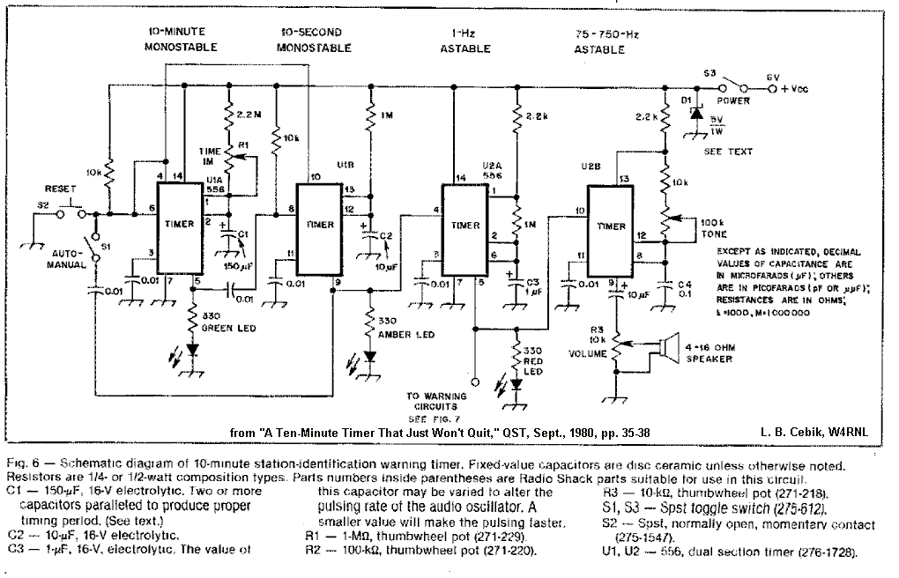

A Ten-Minute Timer That Just Won't Quit
A Ten-Minute Timer That Just Won't Quit
In September, 1980 (pp. 34-38), QST printed a little 10-minute timer circuit that is still (Jan. 2000) in use in my shack. Requests for the circuit diagram led me to reproduce the original diagram--although there are some optional additions noted in other diagrams in the article. (Getting the entire QST CDROM collection from 1915-1995 is a good archive for the shelf.)

The diagram may be large for the screen, but can be "screen copied" in pieces for downloading. The size is necessary to preserve the legibility of the detail.
Since the diagram is self-explanatory as to function and descriptions of 555/556 operation abound, I shall add no detail here, but refer you to the original article and various data sheets. Low-current and other updated versions of the 556 chip may be available and should be used. Some of them may require adjustment of components used in linking the sections, etc. However, the basic concept is still sound, despite the age of the circuit.
Updated 01-29-00. © L. B. Cebik, W4RNL. First published in QST September, 1980. Data may be used for personal purposes, but may not be reproduced for publication in print or any other medium without permission of the author.